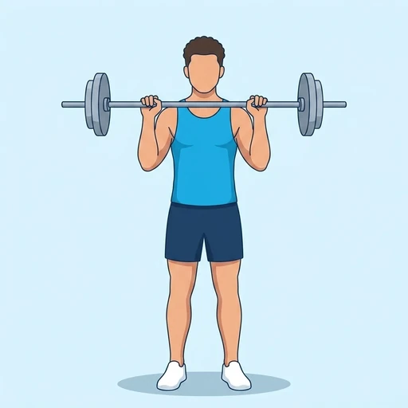

Paused Overhead Press
An overhead press variation that pauses the bar at the shoulders, removing momentum to build strict pressing strength and overhead stability.
Shoulders · Barbell · Advanced


Muscles worked by the Paused Overhead Press
Primary
Secondary
Also called: front deltoid, anterior delt, front delt, anterior deltoid, side deltoid, lateral delt.
Equipment
Also called: bar, olympic barbell, straight bar, olympic bar, power bar.
How to do the Paused Overhead Press
- Set up with a barbell racked at shoulder height, feet shoulder-width apart, and the core braced.
- Press the bar straight overhead until the elbows are fully locked out.
- Lower the bar under control back down to the front of the shoulders.
- Hold a full one-second pause at the shoulders, keeping tension and eliminating any bounce.
- Press back up from the dead stop without using leg drive.
Form tips
- Keep the pause strict -- no rebounding the bar off the shoulders.
- Brace hard and keep the bar path vertical over the mid-foot.
- Use a weight you can control through the dead-stop start.
At a glance
| Body part | Shoulders |
|---|---|
| Category | Strength |
| Force type | Push |
| Mechanic | Compound |
| Difficulty | Advanced |
| Equipment | Barbell |
| Goals | Hypertrophy, Strength |
| Tags | Push day, Knee safe, Lower back safe, Shoulder safe, No axial load |
| MET | 6.0 (metabolic equivalent, for calorie estimates) |
| Unilateral | No |
| Bodyweight | No |
| Dataset id | paused-ohp |
Paused Overhead Press in German & Spanish
| German | Pausiertes Überkopfdrücken |
|---|---|
| Spanish | Press militar con pausa |
Descriptions, instructions and tips ship in all three languages in the JSON.
Related exercises
Exercise data (JSON)
The record below is exactly what exercises.json ships for this exercise — names, descriptions, instructions and tips in English, German and Spanish.
{
"id": "paused-ohp",
"name_en": "Paused Overhead Press",
"name_de": "Pausiertes Überkopfdrücken",
"name_es": "Press militar con pausa",
"description_en": "An overhead press variation that pauses the bar at the shoulders, removing momentum to build strict pressing strength and overhead stability.",
"description_de": "Eine Variante des Überkopfdrückens, bei der die Langhantel auf Schulterhöhe pausiert wird, um Schwung zu eliminieren und strikte Druckkraft sowie Stabilität über Kopf aufzubauen.",
"description_es": "Una variante del press militar que hace una pausa con la barra a la altura de los hombros, eliminando el impulso para desarrollar fuerza de empuje estricta y estabilidad por encima de la cabeza.",
"category": "strength",
"force_type": "push",
"mechanic": "compound",
"difficulty": "advanced",
"equipment": "barbell",
"body_part": "shoulders",
"primary_muscles": [
"anterior_deltoid",
"lateral_deltoid"
],
"secondary_muscles": [
"trapezius",
"triceps_brachii"
],
"goals": [
"hypertrophy",
"strength"
],
"tags": [
"push_day",
"knee_safe",
"lower_back_safe",
"shoulder_safe",
"no_axial_load"
],
"variation_group": "overhead-press",
"is_unilateral": false,
"is_bodyweight": false,
"instructions_en": [
"Set up with a barbell racked at shoulder height, feet shoulder-width apart, and the core braced.",
"Press the bar straight overhead until the elbows are fully locked out.",
"Lower the bar under control back down to the front of the shoulders.",
"Hold a full one-second pause at the shoulders, keeping tension and eliminating any bounce.",
"Press back up from the dead stop without using leg drive."
],
"instructions_de": [
"Stelle dich mit der Langhantel auf Schulterhöhe im Frontracking auf, Füße schulterbreit, Rumpf angespannt.",
"Drücke die Hantel gerade nach oben, bis die Ellenbogen vollständig gestreckt sind.",
"Senke die Hantel kontrolliert zurück bis vor die Schultern.",
"Halte eine volle Sekunde Pause auf Schulterhöhe, bleibe unter Spannung und vermeide jeden Schwung.",
"Drücke aus dem Stand ohne Beineinsatz wieder nach oben."
],
"instructions_es": [
"Colócate con la barra a la altura de los hombros, pies al ancho de los hombros y el core firme.",
"Empuja la barra recta por encima de la cabeza hasta bloquear los codos.",
"Baja la barra de forma controlada hasta el frente de los hombros.",
"Mantén una pausa completa de un segundo en los hombros, conservando la tensión y evitando cualquier rebote.",
"Vuelve a empujar desde la posición estática sin usar impulso de piernas."
],
"tips_en": [
"Keep the pause strict -- no rebounding the bar off the shoulders.",
"Brace hard and keep the bar path vertical over the mid-foot.",
"Use a weight you can control through the dead-stop start."
],
"tips_de": [
"Halte die Pause strikt – kein Abfedern der Hantel an den Schultern.",
"Spanne den Rumpf fest an und halte die Hantelbahn senkrecht über dem Mittelfuß.",
"Nutze ein Gewicht, das du aus dem Stand kontrollieren kannst."
],
"tips_es": [
"Mantén la pausa estricta: sin rebotar la barra en los hombros.",
"Aprieta el core y mantén la trayectoria de la barra vertical sobre el medio del pie.",
"Usa un peso que puedas controlar desde el arranque estático."
],
"met": 6.0,
"images": {
"flat": {
"start": "images/flat/ohp-start.webp",
"peak": "images/flat/ohp-peak.webp"
}
}
}Fetch just this exercise
const { exercises } = await fetch(
"https://exercise-dataset.com/exercises.json"
).then(r => r.json());
const ex = exercises.find(e => e.id === "paused-ohp");Free for personal and commercial in-app use with attribution (“Exercise data by RepDB”) — see the license and ready-made attribution snippets. Redistributing the data as a dataset or API is not permitted.